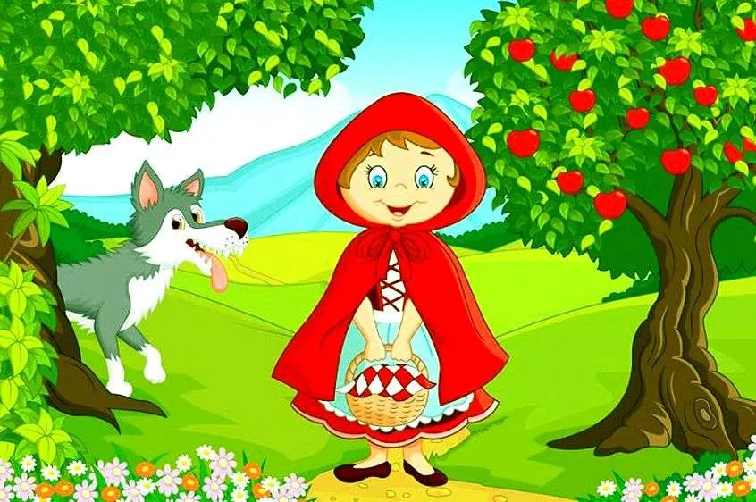

Había una vez una niña muy bonita. Su madre le había hecho una capa roja y la muchachita la llevaba tan a menudo que todo el mundo la llamaba Caperucita Roja.
Un día, su madre le pidió que llevase unos pasteles a su abuela que vivía al otro lado del bosque, recomendándole que no se entretuviese por el camino, pues cruzar el bosque era muy peligroso, ya que siempre andaba acechando por allí el lobo.
Caperucita Roja recogió la cesta con los pasteles y se puso en camino. La niña tenía que atravesar el bosque para llegar a casa de la Abuelita, pero no le daba miedo porque allí siempre se encontraba con muchos amigos: los pájaros, las ardillas…
imagen